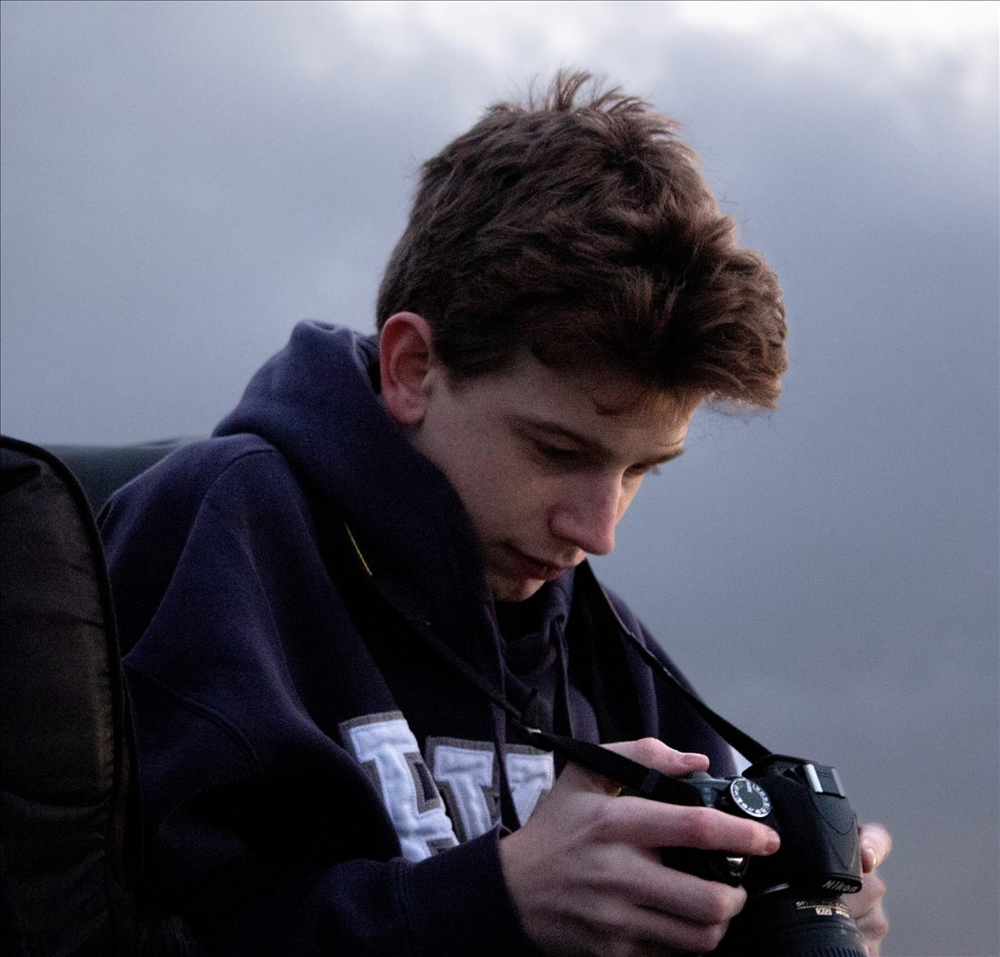

ABOUT

Carson Dibb — Photographer
I’m Carson Dibb, a photographer based in Utah with a focus on capturing events, sports, and people.
My work ranges from portraits and creative photoshoots to concerts, sporting events, and live experiences. I love working in fast-moving environments where timing, composition, and the ability to adapt matter.
Photography is both a creative outlet and a way for me to document my life. My goal is to create images that feel authentic to the moment, and represent my perspective.
I’m always looking for new people, places, and projects to photograph.
CONTACT
Contact me for a photoshoot or project collaboration.
Get in touch